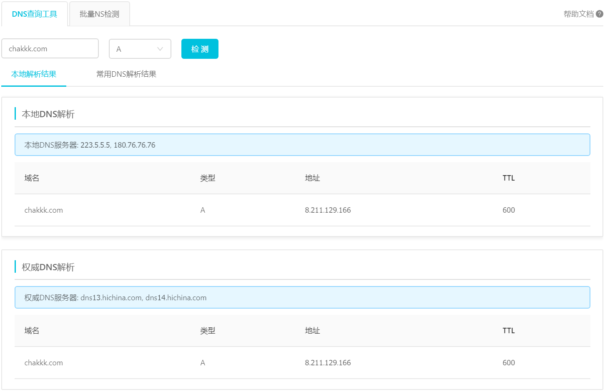

域名备案与证书申请
1.计划将项目部署在云服务器上并提供域名访问路径，由于项目中需要调取网络摄像头采集图片，网页对摄像头调用的限制比较高，要求必须使用HTTPS协议或者是运行在本地localhost上(127.0.0.1)，否则无法调用。也就是说要将项目上云，要绑定域名并申请SSL证书才能成功被访问。
2.域名购买完毕，但服务器区域在上海，按相关规定只要网站托管在中国内地（大陆）服务器上，就需要在备案服务器所在的接入商为网站域名申请ICP备案。如果未提交过备案申请就直接将域名解析到服务器上，网站使用HTTP协议访问将被运营商阻断并跳转到固定页面，提示「需要先完成备案操作才能正常访问」，如下图所示：

备案流程如下图（来自腾讯云），详见如何快速备案网站。
 可以看到网站备案审核时间较长，若购买短期服务器就更不合适了。
然而域名解析至非中国内地服务器无需备案，所以使用境外服务器就方便了很多。
可以看到网站备案审核时间较长，若购买短期服务器就更不合适了。
然而域名解析至非中国内地服务器无需备案，所以使用境外服务器就方便了很多。
域名备案注意事项 域名需要在注册有效期内且大于三个月，部分地区管局要求域名有效期大于45天，才能申请备案；且不同的服务器类型也有不同的要求，就阿里云来说，如果是ECS实例需包月3个月以上（含续费）并需要购买公网带宽，才能进行备案操作。（注：按量付费实例无法申请备案服务号）。其他服务器类型详情见链接 。阿里云备案详细步骤见链接 ，腾讯云见链接 ，按照提示操作即可。
域名到期后注意事项 已经备案的域名如果到期后不再续费，请及时进行备案注销操作！域名到期后会自动释放供其他用户使用，但域名与备案信息是分开的，需要单独再对网站备案进行注销操作，具体操作需要询问注册相关管局。
解决方案
1.修改hosts文件，目录为C:\Windows\System32\drivers\etc
，该文件包含IP地址到主机名(hosts
name)的映射关系，每一条信息都应单列一行，如102.54.94.97 test.com。
2.github.io页面跳转，也就是通过访问github域名重定向，也就是页面跳转到到ip+端口访问的方式。
3.境外服务器不受限制，可以直接做域名解析与Nginx端口转发，从而通过域名访问网页。编辑Nginx配置文件如下：
1
2
3
4
5
6
7
8
9
10
11
12
13# 编辑Nginx配置文件
vim /etc/nginx/nginx.conf
# 添加端口转发内容
server {
listen 80;
server_name http://8.211.129.166;
location / {
proxy_pass http://8.211.129.166:8090;
}
}
# 重新加载配置文件
service nginx reload
申请安全证书 Let's Enpenty提供免费的证书申请服务，三个月有效期后可进行自动续约操作。
设置域名解析后不生效 原因：为了提高网站访问速度，系统会自动将已经访问过并获取IP地址的网站存入本机电脑DNS缓存里，一旦再对这个网站进行访问，则不再通过DNS服务器而直接从本机电脑DNS缓存取出该网站的IP地址进行访问。本机电脑DNS缓存出现了问题，导致网站无法访问。通过阿里巴巴DNS查询工具，发现域名解析在本地DNS上与在云解析DNS上的IP地址不同，云解析上是正确的地址，而可以看到本地DNS是仍旧是之前设置过的旧地址，没有被刷新。
解决方案 ：刷新本地DNS缓存。 * 等待TTL时间过后再进行尝试，但本机TTL为1（奇怪啊） * windows刷新DNS命令，在命令行输入：ipconfig /flushdns（无效） 这种情况与电脑的网络连接方式有关，如果Windows直接拨号上网可以在 “运行” 中输入CMD，然后执行命令ipconfig /flushdns来刷新本机电脑 DNS 缓存；如果通过路由上网，需要清空路由的DNS缓存。清空的方法可以通过重启路由解决。如果不能重启路由，需要更换Windows的DNS服务器为其他地址。指定具体DNS服务器，将其设置为阿里云公共DNS地址：223.5.5.5和223.6.6.6或其他公共DNS均可。
检验解析是否生效 *
使用域名检测工具，如在线检测网站或DNS查询工具，如下图阿里DNS查询工具所示，切换DNS服务器后，本地解析已经刷新。
 * 使用ping+域名命令进行检测  * 使用nslookup+域名查看具体信息
* 使用nslookup+域名查看具体信息 
参考：
- https://help.aliyun.com/knowledge_detail/39834.html?spm=a2cle.14465449.0.0.11d423fahqyU1Y#h2--dns-2
- https://www.zhihu.com/search?type=content&q=%E5%88%B7%E6%96%B0%E6%9C%AC%E5%9C%B0DNS%E6%97%A0%E6%95%88
- https://cloud.tencent.com/document/product/302/30597